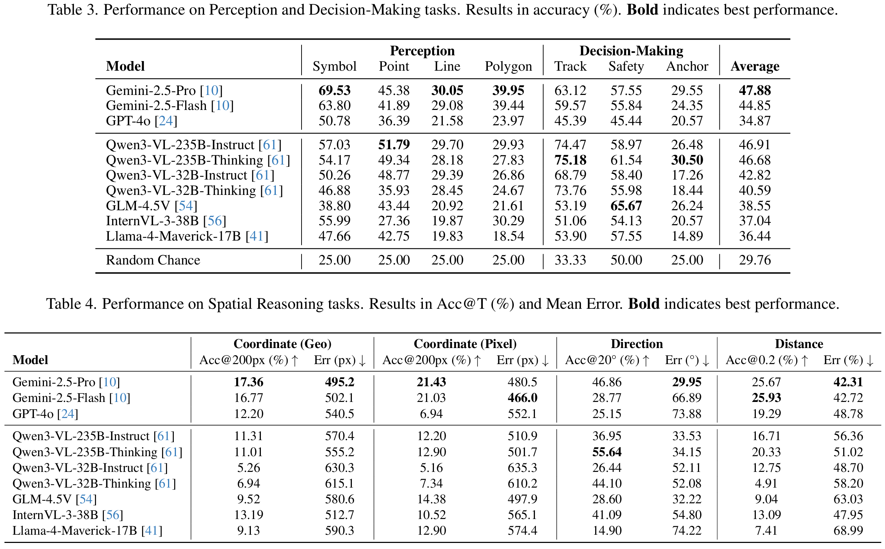
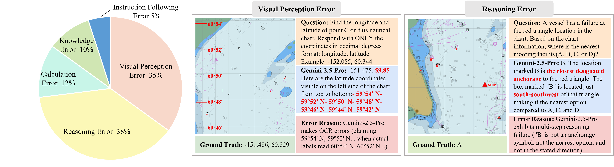
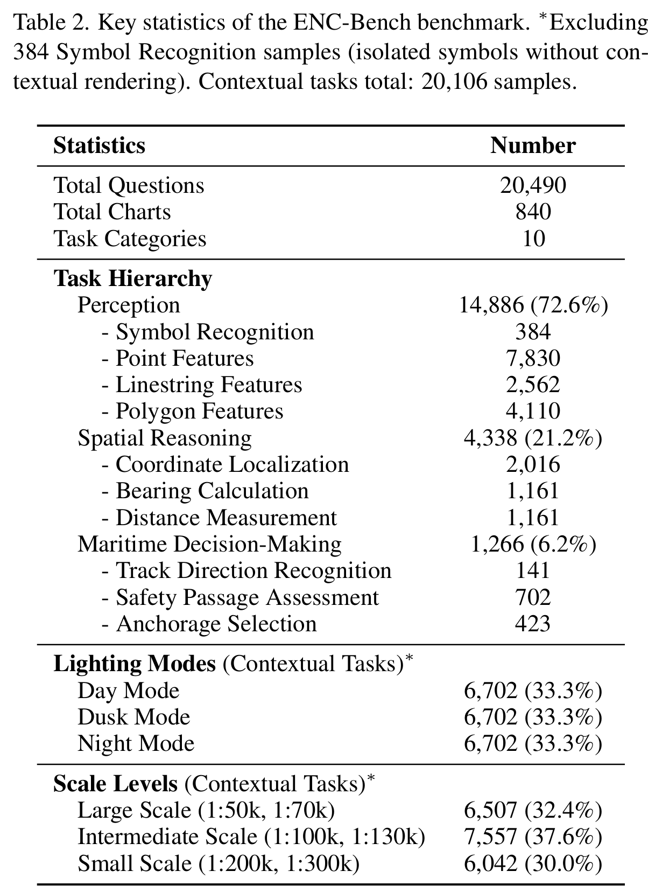
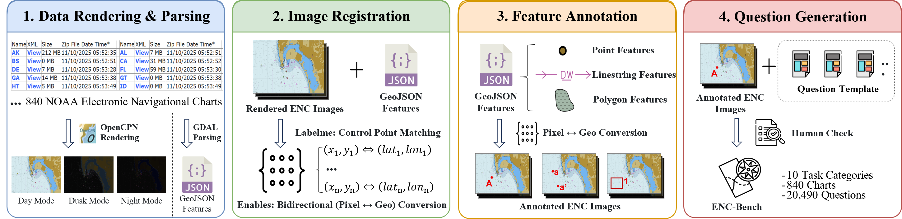

CVPR 2026
Electronic Navigational Charts (ENCs) are the safety-critical backbone of modern maritime navigation, yet it remains unclear whether multimodal large language models (MLLMs) can reliably interpret them. Unlike natural images or conventional charts, ENCs encode regulations, bathymetry, and route constraints via standardized vector symbols, scale-dependent rendering, and precise geometric structure—requiring specialized maritime expertise for interpretation.
We introduce ENC-Bench, the first benchmark dedicated to professional ENC understanding. ENC-Bench contains 20,490 expert-validated samples from 840 authentic NOAA ENCs, organized into a three-level hierarchy: Perception (symbol and feature recognition), Spatial Reasoning (coordinate localization, bearing, distance), and Maritime Decision-Making (route legality, safety assessment, emergency planning under multiple constraints). All samples are generated from raw S-57 data through a calibrated vector-to-image pipeline with automated consistency checks and expert review.
We evaluate 10 state-of-the-art MLLMs such as GPT-4o, Gemini 2.5, Qwen3-VL, InternVL3, and GLM-4.5V under a unified zero-shot protocol. The best model achieves only 47.88% accuracy, with systematic challenges in symbolic grounding, spatial computation, multi-constraint reasoning, and robustness to lighting and scale variations. By establishing the first rigorous ENC benchmark, we open a new research frontier at the intersection of specialized symbolic reasoning and safety-critical AI, providing essential infrastructure for advancing MLLMs toward professional maritime applications.
Drag the slider to compare standard map views with Electronic Navigational Charts. ENCs encode safety-critical maritime data unavailable in consumer mapping services.
Comparison of the same geographic region across (a) Google Maps Standard View, (b) Google Maps Satellite Imagery, and (c) NOAA Electronic Navigational Chart (ENC). ENCs provide precise bathymetric data, navigation aids, hazard markers, and regulatory zones essential for safe maritime navigation.
Zero-shot performance of 10 state-of-the-art MLLMs across all ENC-Bench task categories. The best model (Gemini-2.5-Pro) achieves only 47.88% overall accuracy.

| Model | Type | Perception (%) | Spatial Reasoning (%) | Decision-Making (%) | Overall (%) |
|---|---|---|---|---|---|
| Gemini-2.5-Pro | Proprietary | — | — | — | 47.88 ★ |
| GPT-4o | Proprietary | — | — | — | — |
| Qwen3-VL | Open-source | — | — | — | — |
| InternVL3 | Open-source | — | — | — | — |
| GLM-4.5V | Open-source | — | — | — | — |
| Llama-4 | Open-source | — | — | — | — |
★ Best model. Full per-task breakdown and all 10 model scores are available in the paper. Cells marked — will be updated upon paper release.

Click any image to view full size. Key figures from the ENC-Bench dataset and benchmark.
ENC-Bench is built from 840 authentic NOAA ENCs via a fully-automated S-57 data generation pipeline with expert validation.


If you find ENC-Bench useful in your research, please cite our paper:
@inproceedings{cheng2026encbench,
title = {ENC-Bench: A Benchmark for Evaluating Multimodal Large
Language Models in Electronic Navigational Chart Understanding},
author = {Cheng, Ao and Li, Xingming and Ji, Xuanyu and He, Xixiang
and Sun, Qiyao and Qiu, Chunping and Huang, Runke and Hu, Qingyong},
booktitle = {Proceedings of the IEEE/CVF Conference on Computer Vision
and Pattern Recognition (CVPR)},
year = {2026}
}Visitor Map


{kind=link}
{kind=link}
{kind=link}
{kind=link}
{kind=link}
{kind=link}